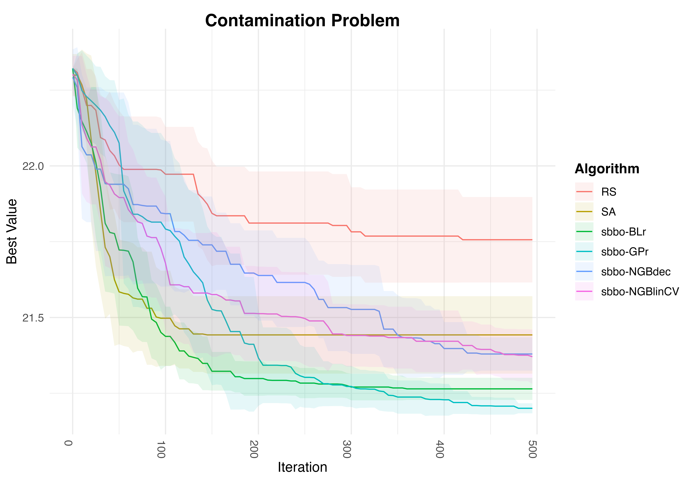

Simulation-based Bayesian Optimization
CUNEF University
Cheap yet effective way of doing research
Take a problem from the comp. sci. community
Bring the statistical perspective / stats. methodology
Why?
- Very mathy for Comp. Sci. reviewers
- Very fancy form Stat. reviewers
The CS problem
Find extreme of objective function
\[\begin{equation*} \arg\max_{x \in \mathcal{S}} f(x) \end{equation*}\]
Possibly discrete structured domain \(\mathcal{S}\) (e.g. \(\mathcal{S} = [k]^p\))
No closed form for \(f(x)\)
\(f(x)\) is expensive to evaluate
We can query at \(x\) and obtain a (possibly noisy) evaluation of \(f(x)\)
Many applications: RNA design, molecular design…
Goal
Get good estimates of global maximum, with few objective function evaluations
A possible way to go: Bayesian Optimization
Bayesian Optimization (in a nutshell)
Imagine we have access to: \(\mathcal{D}_{1:T} = \lbrace x_t, y_t \rbrace_{t=1}^T\) where
\[y_t \equiv y(x_t) \equiv f(x_t) + \epsilon, ~~~~~ \epsilon \sim \mathcal{N}(0, \sigma^2)\]
Problem: We have budget for \(H\) function evaluations. Using all available info, decide where to evaluate: \(x_{T+1}, \dots, x_{T+H}\)
Solution: Locations maximizing Expected Utility1 …too hard, go greedy: just decide next location!
Bayesian Optimization (in a nutshell)
To do this:
Create probabilistic (Bayesian?) model of response \(y\) given covariates \(x\)
Given prior knowledge about \(f(x)\) and evidence coming from \(\mathcal{D}_{1:T}\), summarise our beliefs about result if we query at \(\bf{x_{T+1}}\) through the Posterior Predictive Distribution
\[\begin{equation*} \pi[y_{T+1} | x_{T+1}, \mathcal{D}_{1:T}] \end{equation*}\]
Bayesian Optimization (in a nutshell)
- Find
\[\begin{eqnarray*} x^*_{T+1} &=& \arg\max_{x_{T+1} \in \mathcal{S}} \mathbb{E}_{y_{T+1} | x_{T+1}, \mathcal{D}_{1:T}} [u(y_{T+1}, x_{T+1} )] \\ &=&\arg\max_{x_{T+1} \in \mathcal{S}} \int u(y_{T+1}, x_{T+1} ) \pi(y_{T+1} | x_{T+1}, \mathcal{D}_{1:T}) d y_{T+1} \end{eqnarray*}\]
Bayesian Optimization - Difficulties
\(\mathcal{S}\) could be a combinatorial search space (or even more complex!). We need:
Suitable models of response given covariates
Solve a combinatorial optimization in Step 3.
SBBO
We propose Simulation Based Bayesian Optimization (SBBO): an approach to 2 that just requires sampling from posterior predictive distribution
\[\begin{equation*} \pi[y_{T+1} | x_{T+1}, \mathcal{D}_{1:T}] \end{equation*}\]
allowing us to use a wide variaty of models which are suitable for combinatorial spaces
SBBO - Main idea
Convert EU maximization into a simulation problem.
The EU is:
\[\begin{eqnarray*} \Psi(x) \equiv \int u(y, x ) \cdot \pi(y \vert x, \mathcal{D}_{1:T} ) d y \end{eqnarray*}\]
Given non-negative and bounded utility, recast EU maximization as a simulation from
\[\begin{eqnarray*} g(x, y) \propto u(y, x ) \cdot \pi(y \vert x, \mathcal{D}_{1:T} ) \end{eqnarray*}\]
NOTE: mode of marginal in \(x\) is \(x^*_{T+1}\)!
SBBO - Main idea
- We could simulate from \(x,y \sim g(y, x)\) and find the mode in \(x\)… just limited for low dimensional \(x\)
SBBO - Main idea
- Alternative, Muller et. al. (2004): auxiliary distribution
\[\begin{eqnarray*} g_H(x, y_1, \dots, y_H) \propto \prod_{h=1}^H u(y^h, x ) \cdot \pi(y^h \vert x, \mathcal{D}_{1:T} ) \end{eqnarray*}\]
for positive integer \(H\). Marginal in \(x\)
\[\begin{eqnarray*} g_H(x) \propto \Psi(x)^H \end{eqnarray*}\]
SBBO - Main idea
Inhomogeneus MCMC simulation from \(g_H(y, x)\) with increasing \(H=H_n\) such that stationary distribution for fixed \(H\) is \(g_H\), converges to uniform over set of expected utility maxmizers
SBBO - Gibbs
Let’s define
\[\begin{eqnarray*} g_H(x, y_1, \dots, y_H) \propto \exp \left \lbrace \sum_{h=1}^H \log[ u(y^h, x ) ] + \log [\pi(y^h \vert x, \mathcal{D}_{1:T}) ] \right \rbrace \end{eqnarray*}\]
SBBO - Gibbs
Recall \(x \in [k]^p\) is a \(p\)-dimensional vector of \(k\)-levels categorical variables. Then:
\[\begin{eqnarray*} g_H(x_q \vert \cdot) \propto \exp \left \lbrace \sum_{h=1}^H \log[ u(y^h, x_q \cup x_{-q} ) ] + \log [\pi(y^h \vert x_q \cup x_{-q}, \mathcal{D}_{1:T}) ] \right \rbrace \end{eqnarray*}\]
Softmax over \(\sum_{h=1}^H \log[ u(y^h, x_q \cup x_{-q} ) ] + \log [\pi(y^h \vert x_q \cup x_{-q}, \mathcal{D}_{1:T}) ]\) for every level \(x_q\)!
SBBO - Gibbs
Assume current state of chain is \(x, y_1, \dots, y_H\). Iterate
- For \(q=1, \dots, p\), sample \(x_q \sim g_H(x_q \vert \cdot)\)
- For \(h=1, \dots, H\), sample \(y_h \sim g_H(y_h \vert \cdot)\), using a Metropolis-Hastings step.
- Increase \(H\) according to chosen “cooling” schedule
SBBO - Gibbs
- Problem: recall that \(g_H(x_q \vert \cdot)\)
\[ \texttt{softmax} \left( \sum_{h=1}^H \log[ u(y^h, x_q \cup x_{-q} ) ] + \log [\pi(y^h \vert x_q \cup x_{-q}, \mathcal{D}_{1:T}) ] \right) \]
We need analytical form of posterior predictive distribution!
Solution idea:
- Update \(y_1, \dots, y_H\) and \(x_q\) at the same time.
- Use posterior predictive distribution as proposal for \(y_1, \dots, y_H\)
SBBO - Implementation details
We run the previous algorithm increasing \(H\) until certain value.
Last generated \(x\) is the new evaluation
We propose several probabilistic models of response given discrete covariates for which we have sampling access to their posterior predictive distribution (PPD)
SBBO - Learners
- BLr: Bayesian second-order linear regression with heavy-tailed horseshoe prior
- GPr: GP with Tanimoto kernel
- NGBoost (Duan et. al., 2020): natural gradient boosting with two different base learners
- NGBdec: Decision tree
- NGBlin: Lasso linear regression
- To compare: Simulated Annealing (SA), Random Local Search (RS)
Experimental Results
Initial dataset \(\mathcal{D}_{1:T} = \lbrace x_t, y_t \rbrace_{t=1}^T\) with \(T=5\)
For \(t=1:500\) iterations:
- Use SBBO to propose next sample: \(x_{t+1}\). Utility function expected improvement: \(u(y) = \max_y \left( y-y^*, 0 \right)\)
- Evaluate true objective: \(y_{t+1}(x_{t+1})\)
- Update dataset with \((x_{t+1}, y_{t+1})\)
Report best function value after \(t\) evaluations of true objective, averaged over 10 runs (plus/minus one standard error).
Contamination Problem
Food supply with \(d=25\) stages that maybe contaminated
\(Z_i\) denotes fraction of food contaminated at \(i\)-th stage
At stage \(i\), prevention effort (with cost \(c_i\)) can be made \((x_i = 1)\) decreasing contamination a random rate \(\Gamma_i\)
If no prevention is taken \((x_i = 0)\), contamination spreads with random rate \(\Lambda_i\)
\[\begin{equation*} Z_i = \Lambda_i (1-x_i)(1 - Z_{i-1}) + (1 - \Gamma_i x_i) Z_{i-1} \end{equation*}\]
Contamination Problem - Goal
Decide for each stage whether to intervene or not to minimize cost (\(2^d = 2^{25}\) candidate solutions)
Ensuring fraction of cont. food does not exceed \(U_i\) with probability at least \(1-\epsilon\)
Lagrangian relaxation
\[\begin{equation*} \arg\min_x \sum_{i=1}^d \left[ c_i x_i + \frac{\rho}{T} \sum_{k=1}^T \left(1_{\lbrace Z_{ik} > U_i \rbrace} - (1- \epsilon)\right)\right] + \lambda \Vert x \Vert_1 \end{equation*}\]
Results

Number of Function Evaluations vs Best Value found for CP
RNA design
RNA sequence: string \(A = a_1, a_2, \dots, a_n\), with \(a_i \in \lbrace A,C,G,U \rbrace\)
Secondary structure: ensemble of paring basis with minimum free energy (MFE)
Estimate MFE via thermodynamic model and dynamic programming has time complexity \(\mathcal{O}(n^3)\)
Searching for MFE structure is hard: * \(4^n\) possibilites
Use SBBO to find MFE RNA chain of lenght \(n\) with few energy evaluations
Conv. Bayesian Neural Nets!
RNA design
Number of Function Evaluations vs Best Value found for RP
RNA design
Number of Function Evaluations vs Best Value found for RP
Conclusions
SBBO allows to do BO with any surrogate model (as long as we can sample from its PPD)
Opens the door to use many models (not used before in BO)
SBBO can be used to optimize expected utilities not only in combinatorial search spaces, also in continuous and mixed ones!
Future Work
Can we understand which algorithm will work best apriori?
More models: Bayesian non-parametric models such as BART
Go beyond the greedy approach…
- Sequential decision problem
- Generate multiple proposals at once (repulsion? \(S^3\)?)
Exploit the idea of conjugate utilities
Thanks!
Code available at my github!
SBBO - Tanimoto GP
Uncertainty on \(f(x)\) modelled through Gaussian Process
\(x \in \lbrace 0, 1 \rbrace^p\). Kernel function:
\[\begin{equation*} k(x, x') = \frac{x \cdot x'}{\Vert x \Vert^2 + \Vert x' \Vert^2 - x \cdot x'} \end{equation*}\]
- PPD is Gaussian with certain mean and variance analytically available
SBBO - Sparse Bayesian linear regression
\[\begin{eqnarray*} && y = \alpha_0 + \sum_j \alpha_j x_j + \sum_{i,j>i} \alpha_{ij} x_i x_j + \epsilon\\ % && \alpha_k \vert \beta_k, \tau, \sigma^2 \sim \mathcal{N}(0, \beta_k^2 \tau^2 \sigma^2)\\ % && \beta_k, \tau \sim \mathcal{C}^+(0, 1)\\ % && P(\sigma^2) \propto \sigma^{-2} \end{eqnarray*}\]
- PPD accesible through MCMC (Gibbs sampler)
SBBO - NGBoost
Duan et. al. (2020):
Output given covariates modelled through \(y \vert x \sim P_\theta (x)\)
Where \(\theta(x)\) are obtained through an additive combination of \(M\) base learners and an initial \(\theta^{(0)}\)
\[ \theta = \theta^{(0)} - \eta \sum_{m=1}^M \rho^{(m)}\cdot f^{(m)} (x) \]
- Learners are trained to minimize a proper scoring rule using a refinement of gradient boosting
SBBO - NGBoost
Any base learner can be used
Base learners used: shallow decision trees and linear regressions with lasso regularization
PPD directly accesible
Results - Why?

Calibrartion Plot and Performance Metrics. Sample size: 50
Results - Why?
Calibrartion Plot and Performance Metrics. Sample size: 200
Results - Why?
Calibrartion Plot and Performance Metrics. Sample size: 400